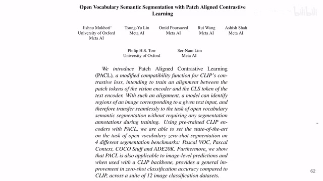
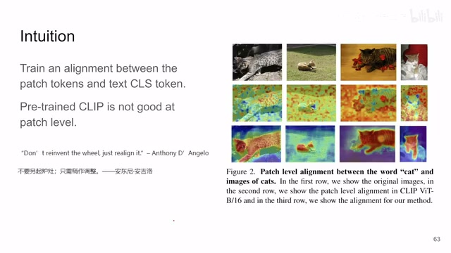
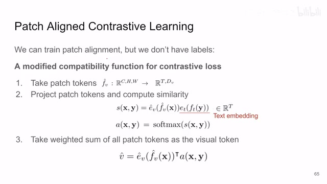
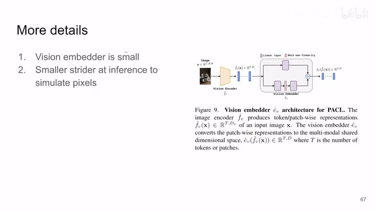
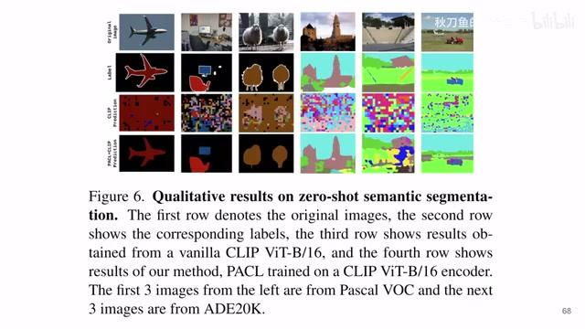
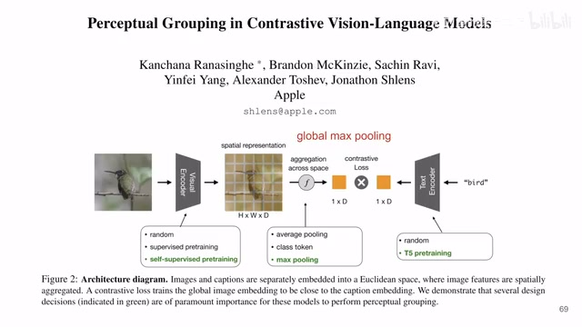

← 返回阅读库 · 原论文目录
论文讲解阅读文档 · 多模态语言模型 · v027
Open Vocabulary Semantic Segmentation with Patch Aligned Contrastive Learning
视频时长 00:04:31；讲解文字 2,158 字符；提取讲解画面 7 张。按视频原顺序阅读，每段文字保留时间戳。
文字来自整段视频的自动语音转写，按自然停顿分段，并与 PPT / 论文页面 / 演示画面对齐。未将讲解压缩为摘要；术语、数字和口述公式请结合画面及原论文核对。 阅读稿已校正规范部分明确术语误识别；原始逐字稿和每处修改记录另行保留。
讲解画面为源视频截图（640×360），不是可编辑 PPT 文件。全片按每秒 2 帧扫描内容变化，逐步展开页保留；连续动画保留代表画面。清晰度受源视频限制。
下载完整资料包 · 含离线 HTML、PDF、Word、全部 PPT 画面和字幕。
原论文与材料
Perceptual Grouping in Contrastive Vision-Language Models · 下载完整 PDF（23 页）
Open Vocabulary Semantic Segmentation with Patch Aligned Contrastive Learning · 下载完整 PDF（14 页）
按时间阅读
00:00:00–00:00:16 · 画面 001

00:00:00–00:00:16 · 画面 001大家好,今天我们来快速水两篇论文 Open Vocabulary Semantic Segmentation with Patch-aligned Contrastive Learning 这一篇就是通过对 clip 稍加调整来让 clip 模型能够做到对图片更细尺度的划分那么整个这个文章的想法非常直接熟悉文明 6 的朋友应该知道不要另起炉灶,只需稍作调整
00:00:16–00:01:20 · 画面 002

00:00:16–00:01:20 · 画面 002那么这一篇的任务呢，就是他想要让我们的这个图片中一个一个的小的 patch 能够对应到一个文本的 label。我们知道 clip 这个东西，它是一整张图片，然后拿一个 classification token，就是一整张图片用一个 token 去总结，然后呢和这个 text 这个 embedding text token 来做 contrastive learning 来训练出来的。那么这样子呢，就导致了他的这个 representation 始终是一个概括性的，它概括了一整张图片。你可以看到就像这边这样的，那么当你去把这个图片里面的每一个 patch 拿出来和这个 text embedding 做这个相似度的时候，你发现它们就基本没有什么关系。这个当然是不意外的，因为你一开始就没有这么训练它。那么本文的方法就是我改进一下它，让它每一个 patch 的 embedding 和文本的 embedding 能够对上
这样子呢，我们做后面的很多事情就会方便很多。那么下面我们来看作者是具体怎么做的啊，就是他稍微修改了一下 clip 里面 contrastive loss 的计算。那具体来说呢，就是原来的标准的 clip 是只拿最后的这个 classification token。现在呢，你是把图片里面所有的 patch 的 token 都拿出来，然后呢，你这些 token 呢经过一个 projector，这个 projector 呢把你的这个 Visual token 统一到这个 text token 这个长度
00:01:20–00:02:43 · 画面 003

00:01:20–00:02:43 · 画面 003你的 Visual Embedding 这里的每一个 Patch 的 Visual Embedding 和这个 Text Embedding 它们做一个相似度。得到一个相似度呢，对每张图片来说做一个 Softmax。那么这样子呢，你就拿到一个权重。这个权重呢，就表示这一个小的 Patch 和这个 Text Embedding 它们的相似程度。那么这个权重呢，这里是这个 AXYX 图像 Y 是它对应的文本嘛那么拿到这个权重之后呢，你按照这个权重把所有的 patch embedding 给它组合起来，就是一个加权的和嘛。那么这样操作下来之后呢，你又是从每张图片很多个 patch embedding 给它集合成了每张图片只有一个 visual embedding。而这个 visual embedding 呢，它是显示的结合了所有的 patch embedding。那么你有了这个新的这个 visual embedding 之后，再拿去和 text embedding 做标准的 clip 训练，就可以把这个模型给它训练出来
这个就是本文最核心的这个技术。那么具体一些实现上的细节呢，比如说你这个 Vision Embedder 它呢是非常小的，你可以看到就是两个分支，一个分支就一个 Linear Layer，另一个分支呢是两个 Linear Layer 中间加了一个 ReLU，非常轻便的一个设计
00:02:43–00:03:37 · 画面 004

00:02:43–00:03:37 · 画面 004那么你现在模型训练完之后，一张图进到这个 Visual Encoder 里面，每一个 patch 都有一个 embedding。那么这个 embedding 呢，你再去和这个 text embedding 一一做对比，就能够得出说这个 image patch 它是属于哪一类了。那么当然这个是 patch level 的，你如果想要获得更加精细的分割结果那怎么办呢？这个时候呢，你就可以通过更改这个 stride 让它的这个每一个 patch 不一定是没有交叠了。现在你通过更改 stride 把这个 stride 减小之后呢，让每一个 patch 那么这样子呢，你就在没有更改训练的时候只在 inference 的时候提高了你最后生成的分割结果的分辨率。那么最后一些结果啊，你可以看到如果直接用 clip 那当然是没有布什么好的，那本文训练的结果
00:03:37–00:03:45 · 画面 005

00:03:37–00:03:45 · 画面 005那么第二篇呢，那这一篇呢更简单了。你看，在我们上一篇，它是算这个 patch embedding 和 text embedding 它们的这个相似度，用这个相似度来决定每个 patch 的，然后呢做加权和嘛。那这里呢更简单了，作者发现啊，我直接把所有的这个 patch，我直接做一个 global max pooling，然后拿过来正常的去做这个 CLIP 的训练就好了。从结果上来看呢，也很不错啊，都是很直接的设计。
00:03:45–00:04:31 · 画面 006

00:03:45–00:04:31 · 画面 006好的，那么以上就是我对这两篇一个非常快速的一个整理，都算不上了，就是一个高度的概括。那么有对这个 Vision Language Model 感兴趣的朋友，非常推荐你到原文去仔细读一下他们的各种设计，还有很多验证性的实验呢，我是没有提到的。好的，那么感谢您的收看，再见。
00:04:31–00:04:31 · 画面 007
00:04:31–00:04:31 · 画面 007转写与来源说明 · 0 个自动复核提示
保留 11 个原始语音片段，0 个片段触发自动复核提示。提示仅用于定位可能的术语、重复或识别问题，不等于已确认错误。
讲解画面为源视频截图（640×360），不是可编辑 PPT 文件。全片按每秒 2 帧扫描内容变化，逐步展开页保留；连续动画保留代表画面。清晰度受源视频限制。
原视频：paper/合集_2026-10-16_多模态语言模型/[论文简析]Open Vocab. Semantic Seg. with Patch Aligned Contrastive...[2212.04994].mp4
SHA-256：fc85af10a0af30ff46e335b5835bcbc3b6f07110b83e907f6483d1db59bcf86e
全文按视频语音与画面制作。原论文可从上方链接下载；完整资料包保留全文、原始逐字稿、字幕和校对记录。